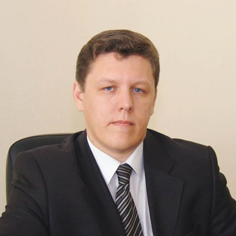
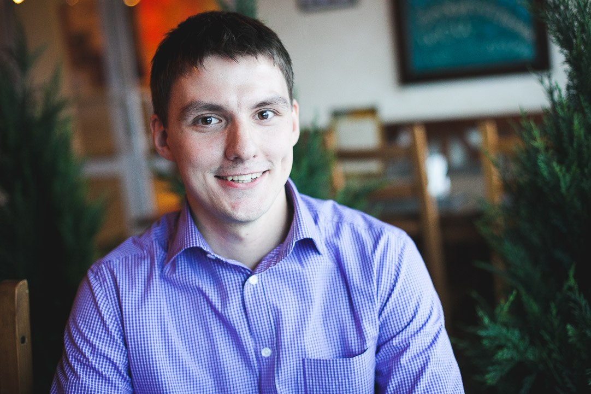
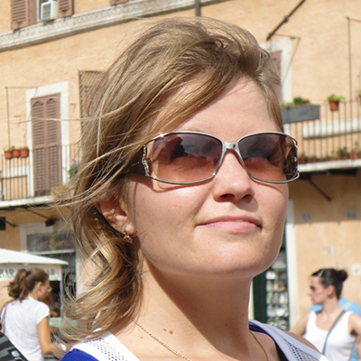

-

Николай Косарев,
Quintiq, Голландия, специалист отдела разработки оптимизационных алгоритмов,
выпуск 2002 года,
прикладная и вычислительная математика.
«Математика идеальна для обучения критическому мышлению и анализу»
Я работаю в отделе разработки оптимизационных алгоритмов голландской компании Quintiq, создающей решения в сфере управления поставками, планировании производства и персонала, логистики для таких крупных клиентов, как DHL, Walmart, ОАО «Северсталь» и многих других. В мои обязанности входит консультация и поддержка сотрудников бизнес-подразделений, занимающихся работой с прикладными задачами реальной жизни, а также непосредственно программирование алгоритмов и их интеграция в существующую систему.
Оглядываясь назад, понимаю, что на матфаке недостаточно внимания уделял учёбе: мои преподаватели могли дать гораздо больше, чем я впитывал в себя. Конечно, в студенческие годы хочется погулять и весело провести время, но все же мой призыв — учиться, учиться и еще раз учиться! Вдумчиво и осознанно.
“Но самое главное качество я всё-таки, кажется, приобрел: способность обучаться самостоятельно, разбираться практически с любой предметной областью, понимать ее закономерности и природу функционирования.
”Считаю, что в этом смысле математика как наука, наш факультет и методы обучения преподавателей просто идеально позволяли научиться критическому мышлению и анализу. Воспоминания о студенческих годах исключительно приятные, и не только потому, что было весело, беззаботно и интересно в учебе и в отдыхе. Матфак всё-таки для меня был первой настоящей школой жизни, куда более серьезной и ответственной, чем весь мой предыдущий опыт, несмотря на то, что я учился в ФМШЛ № 64. Местом, где уважение к студентам, интеллигентность и любовь к знаниям наших преподавателей позволяли почувствовать себя взрослым, причастным к этому большому миру серьезных людей, занимающихся математикой, самой красивой из наук, по моему глубоко субъективному мнению.
-

Ольга Кукина,
селлинговое агентство при ВГТРК, Москва, бизнес-аналитик,
выпуск 2005 года,
математика.
«Нас учили разбираться в том, что ты делаешь, а не просто зубрить и заучивать»
О том, что я буду поступать в универ, на матфак, а не куда-то еще, я знала задолго до поступления. Папа всю жизнь проработал на матфаке, с самого открытия университета, мама училась тут же. Часто в детстве папа брал меня на работу: на капустники, на «Мисс Математику», на Аукцион. Я всегда думала: «Хорошая работа, сплошные развлечения, вот бы мне сюда». Кроме того, когда я училась в школе, в стенах матфака часто проводили КВН, матбои, олимпиады, конференции и прочие развлечения для школьников, интересующихся математикой. Преподаватели и студенты математического факультета учили нас в летних школах. Поэтому матфак для меня — родное место с самого детства.
то для меня матфак был в студенческие годы? Да практически всем. Здесь я стала встречаться со своим будущим мужем! Поэтому можно сказать, что матфак определил мою судьбу, как личную, так и профессиональную. Я училась в «научной» группе, и это было очень трудно.
“Нас учили разбираться в том, что ты делаешь, а не просто зубрить и заучивать. Нас учили импровизировать. Учили доводить начатое дело до конца. Закаляли характер.
”Сан Саныч Колоколов, наш завкафедрой, научил быть дисциплинированными. Сколько он с нами возился перед защитой диплома! Ставил нам правильную научную речь, заставлял убирать слова-паразиты, учил, чтобы в тексте не было ничего лишнего, а из рассказа было понятно, о чем идёт речь.
Учиться было очень сложно, зато интересно и весело. Одни Дни математики чего стоят. А подготовка к экзаменам? А контрольные или зачеты? Бегаешь, суетишься, спрашиваешь у старшекурсников: «как?», «что?», «дайте задачки», «дайте лекции», «объясните» …На экзаменах обязательно кто-то дежурил под дверью, собирал все задачки, потом они как-то распределялись среди студентов, готовились сообща.
В качестве научного руководителя выбрала Виктора Петровича Ильева. Дипломная работа, а потом и работа в аспирантуре были связаны с теорией графов. Виктор Петрович меня научил очень важной вещи: если есть возможность попробовать что-то сделать, надо попробовать. Потом такой возможности не будет. Это не только про сдачу экзаменов. Это про всё.
Сейчас я работаю бизнес-аналитиком в селинговом агентстве при ВГТРК. Помогаю людям продавать рекламу. Я изучаю то, как работают другие люди (планировщики рекламы, продажники, юристы, бухгалтерия), все это систематизирую, анализирую и подсказываю им, как работать лучше и эффективнее. Ставлю задачи разработчикам программных продуктов. Не имея финансово-экономического или юридического образования, а уж тем более образования рекламщика, я говорю людям, как они должны работать. Ко мне прислушиваются. Потому что я могу разобраться в проблеме.
Применяю ли я именно математику в работе? Да, конечно. Я рисую графы бизнес-процессов, простые человеческие действия перевожу в цифры и символы. Жизнь описываю математическими моделями. С 2008 по 2011 годы я сотрудничала плотно с одним программистом, кандидатом математических наук. Разрабатывали систему постановки рекламных роликов в эфир. Механизмы там запрограммированы — будь здоров. Задача минимум 40-критериальная (с большим числом параметров), для каждого рекламного направления — своя специфика.
Нельзя ждать, что ты придешь на работу после защиты диплома и сразу применишь то, чему тебя учили на матфаке. Такое встречается крайне редко. Скорее всего, на работе тебя не заставят брать интегралы или вычислять определители. Тебя заставят делать более сложную вещь, которой учат на матфаке. Тебя заставят думать. На мой взгляд, на других факультетах этому учат плохо или не учат вовсе.
-

Сергей Корсаков,
"Яндекс", Москва, менеджер проектов в отделе контент-системы,
выпуск 2009 года,
прикладная и вычислительная математика.
«Матфак научил меня быть "антишестерёнкой" и уметь браться за любые задачи и проекты»
Я работаю в компании «Яндекс» менеджером проектов в отделе контент-системы — это то подразделение, которое несёт ответственность за полноту, качество, а также свежесть поисковой базы. Каждый день мы придумываем новые способы её улучшения, проводим эксперименты и по их результатам либо внедряем эти способы, либо отказываемся от внедрения. Мы пишем роботов, которые «скачивают интернет», то есть базы данных, где вся эта информация хранится, а также множество дополнительных сервисов, которыми пользуемся каждый день, чтобы сделать поиск лучше.
Свои воспоминания о математическом факультете я связываю прежде всего с теми людьми, которые меня окружали всё время учёбы — это и преподаватели, и студенты. На матфаке учится огромное количество умных и талантливых ребят, с которыми очень здорово общаться и дружить. За время учёбы я нашел много хороших друзей, мы с ними до сих пор общаемся, несмотря на расстояние, которое нас разделяет.
“Матфак научил меня быть «антишестеренкой» и уметь браться за любые задачи и проекты. Действительно, на математическом факультете получают «классическое образование, после которого можно работать в любой сфере» — именно так мне его преподнес мой завуч Сергей Викторович Савченко в 64 лицее, когда объяснял, почему стоит идти учиться сюда и никуда больше, за что я ему бесконечно благодарен.
”Я старался учиться, и это мне иногда даже удавалось. По предметам, которые нравились, получал хорошие оценки, по другим — не очень. У меня никогда не было цели быть круглым отличником и получить красный диплом.
На самом деле, помимо учёбы я успел поучаствовать во многих интересных внеучебных мероприятиях и кругах по интересам, главным из которых, безусловно, был оргкомитет матфака — группа активных ребят, которые организовывают на факультете такие мероприятия, такие как Неделя Математики и Турнир претендентов. Помимо этого, я успел провести один сезон в студенческом театре под руководством Нины Александровны Козорез (ставили «Любовь — это...» по Слаповскому), а также несколько лет играл в КВН в составе команды «Рутинные Истории».
Если бы меня спросили, на какой факультет я бы поступил, если бы мог вернуть прошлое, то я бы без сомнений ответил — только на математический.
-

Евгений Мельников,
ООО "РосИнтер Ресторантс Сибирь", Новосибирск, региональный управляющий,
выпуск 2000 года,
математика.
«Благодаря обучению здесь люди становятся успешнее, разумнее и профессиональнее, независимо от того, какую дорогу они выберут в дальнейшем»
Любой человек вспоминает свои студенческие годы с легкой ностальгией и улыбкой. В первую очередь в памяти всплывают не бессонные ночи перед экзаменами или сложные задачки, а весёлые вечеринки, первоапрельские марши на Дне Математика и эйфория от сданной сессии.
И, управляя сетью ресторанов, работая в сфере, казалось бы, не имеющей отношения и близко к математике, я с благодарностью вспоминаю учебу. Только потом понимаешь, что на самом деле учат тебя не «теории вероятностей», «математическому анализу» или «преподаванию математики», тебя учат логике, систематизации, дают стимул получать новые знания и находить нужную информацию. И абсолютно неважно, чем ты будешь заниматься в будущем, — это поможет достичь успеха.
“Я уверен, что благодаря обучению здесь люди становятся успешнее, разумнее и профессиональнее независимо от того, какую дорогу они выберут в дальнейшем.
”-
Требование Александра Михайловича Семёнова о знании назубок определений (только понимая, что значит то или иное понятие в бизнесе, ты сможешь эффективно его использовать);
-
общение Николая Андреевича Исаченко с тобой на равных, хотя твои знания и рядом не стоят с его знаниями (только такое отношение к менее знающим коллегам заставляет добиться авторитета);
-
оптимизм Руслана Юрьевича Симанчева (пессимист никогда не добьется высоких результатов);
-
доброта и радушие Михаила Геннадьевича Лопаткова (и ты понимаешь, что успешный человек не обязательно должен быть серьезным и вечно занятым, а обязан быть открытым и находящим время для любого);
про каждого из наших преподавателей можно писать отдельную книгу. -
-

Никита Кардаков,
NASP/Plingm, Стокгольм, ведущий разработчик,
выпуск 2010 года,
прикладная и вычислительная математика.
«Традиции факультета — очень важная часть нашей жизни»
Я закончил Главный Математический в 2010 году. Сейчас живу и работаю в городе Стокгольме. Среди главных побед последнего времени — Бронзовый Каннский Киберлев за проект, который я делал вместе с Google. А также гордость за нынешние проекты, которые связаны в основном с iOS, VOIP (Voice Over Internet Protocol), звуком и музыкой. И, конечно, всё это произошло не без участия лучшего факультета в нашем городе. В наше время, во многом благодаря всевозможным интернет-ресурсам, существуют миллионы способов освоить практически любую технологию. Но, как и прежде, без фундаментальной подготовки, которую даёт ИМИТ, стать настоящим профессионалом не так просто.
“После того, как один мой товарищ-филолог прочитал список дисциплин в моём дипломе, он заметил, что это всё для него звучит как список курсов в одной известной школе чародейства и волшебства. На самом деле, примерно так всё и обстоит.
”Преподавателей, которые могут помочь желающему учиться человеку стать хорошим математиком и программистом, очень много. И всё, что рассказывают на факультете, важно. На собеседовании в Калифорнии или в Европе у вас неожиданно спросят про Б-деревья, про которые вам рассказывал Игорь Викторович Ашаев. И сдав экзамен Игорю Викторовичу на втором курсе, вы решите, что всё в этой жизни повидали. Но на первом же практическом занятии третьего курса Павел Лазаревич Дворкин предложит забыть всё, что вы успели узнать до этого. А если вы сдадите четыре раза математический анализ и по разу — комплексный и функциональный анализ Николаю Андреевичу Исаченко, то ваш мозг будет полностью готов к освоению любого навыка на этой планете и в её небольшой окрестности.
Кроме этого, у каждого студента за всё время обучения есть возможность более подробно ознакомиться с конкретной научной областью или технологией. Этому способствует естественное распределение по кафедрам на старших курсах, выбор темы научной работы, широкий спектр факультетских и общеуниверситетских спецкурсов, и, конечно, открытое сообщество студентов и преподавателей.
Кроме этого, у каждого студента за всё время обучения есть возможность более подробно ознакомиться с конкретной научной областью или технологией. Этому способствует естественное распределение по кафедрам на старших курсах, выбор темы научной работы, широкий спектр факультетских и общеуниверситетских спецкурсов, и, конечно, открытое сообщество студентов и преподавателей. Я с радостью вспоминаю спецкурс Александра Савельевича Штерна по истории математики, подготовку и участие в мировых чемпионатах по спортивному программированию, отдельные дисциплины, связанные с дискретной математикой и… программированием. И, конечно, университетский чемпионат по «Что? Где? Когда?». Традиции факультета — очень важная часть нашей жизни. Неделя математики, начинающаяся традиционно первого апреля, — одно из самых ярких событий каждого студента и преподавателя на факультете. Эти традиции, унаследованные во многом у дружественного Новосибирского Государственного Университета, живут уже больше 30 лет.
-

Павел Сумароков,
Al Digit, Омск, директор,
выпуск 2008 года,
прикладная и вычислительная математика.
«Для достижения высоких целей нужно много трудиться»
Заниматься математикой я начал ещё до ОмГУ, когда в 2000-м поступил в 9 класс лицея 64. Очутившись среди самых умных школьников города, быстро превращаешься из «первого ученика» в человека с растоптанным самолюбием. Тогда это очень помогло научиться трезво оценивать свои силы и понимать, что для достижения высоких целей нужно много трудиться.
В 2003-м со 100-процентным результатом по «апрельскому тестированию» я выбрал математический факультет. Конкурс был большой, проходной балл составлял 37 из 40, и ситуация повторилась — я очутился среди людей на порядок умнее меня самого. После первой сессии из 120 студентов отчислили примерно 40. Мне посчастливилось сдать экзамены на четвёрки. Впрочем, оценки и документ о высшем образовании не стали самой большой ценностью, вынесенной из стен университета. После двух лет обучения я перестал бояться трудностей и понял, что мои знания востребованы.
На третьем курсе нам предложили работу в Центре Интернет при ОмГУ. Для любого студента очень важно получить первый опыт, и математический факультет дал такую возможность. Мы создали несколько простых программ для городских библиотек, но длинная дорога всегда начинается с первого шага. После четвёртого курса мы с другом были приняты на должности младших Java-разработчиков в Luxoft. Тогда это была лучшая компания в Омске, и в очередь к ним выстраивались опытные программисты. Доучившись год, дописав свой компилятор на С++ и сдав последние экзамены, я с большим облегчением, гордостью и радостью получил красный диплом. Сразу после выпуска меня командировали в Канаду к заказчику. Там я узнал многое о процессах разработки и управлении проектами.
“Всё время после окончания ОмГУ я ощущал желание развиваться, учиться новому, решать сложные задачи. Миссия высшего образования состоит именно в том, чтобы привить человеку перечисленные навыки. Математический факультет с ней справился «на отлично».
”В 2009-м, вернувшись в Омск, мы с другом ушли из Luxoft и основали Al Digit. Сегодня в нашей команде 20 разработчиков, и мы пишем мобильные приложения для таких компаний, как «Газпром», Forex Club, Nissan.
-

Александр Шестаков,
Wooga, Берлин, разработчик
выпуск 2010 года,
прикладная и вычислительная математика.
«Это лучшее в Омске место, в котором преподают Computer Science»
В данный момент я занимаюсь разработкой мобильных социальных игр в офисе крупнейшего европейского игрока на данном рынке — компании Wooga, находящейся в самом сердце Берлина.
Отзывы о факультете, на котором проучился пять лет, я пишу немного реже, чем о свежих играх в AppStore, однако сделать это стоит в не меньшей степени, чем поддерживать амбициозных разработчиков. Ах да, если бы это был отзыв, то вы бы уже увидели рейтинг, и в данном случае это твёрдые пять звёзд.
“Итак, что нужно знать про матфак в первую очередь? Это лучшее в Омске место, в котором преподают Computer Science. Мне довелось пообщаться со многими менеджерами и программистами, и сложно не отметить общее представление о выпускниках матфака как одних из самых привлекательных кадров на рынке труда. Да, без работы вы не останетесь.
”Не хотите быть программистом? Что ж, ни для кого не секрет, что на математике держатся практически все современные области знаний, и, как следствие, применение свежеприобретенным знаниям вы сможете найти в совершенно неожиданных местах.
Как помогла математика мне? Статистика и теория вероятностей помогли зарабатывать покером. Понимание рядов Фурье помогает в создании электронной музыки. Я уже не говорю, что логикой мы пользуемся каждый день, когда выносим оценочные суждения, а технический склад ума незаменим в цифровую эпоху.
Поступать на матфак или выбрать более «понятный» факультет? Вопрос сложный в первом приближении, однако, если вы любите точные науки и хотели бы сделать успешную карьеру в сфере IT — добро пожаловать, выбора у вас практически нет.
-

Юрий Дворжецкий,
Luxoft, Омск, разработчик,
выпуск 2010 года,
прикладная и вычислительная математика.
«Всем, что у меня сейчас есть, я обязан матфаку!»
Всем привет! Я выпускник и аспирант ИМИТ, сейчас работаю Java-программистом в Luxoft. Разрушу несколько мифов про ИМИТ, а выводы делайте сами :)
Математика - это скучно.
Математика в ИМИТ — это абсолютно не та математика, которой учат в школе! Здесь вы узнаете про нейронные сети, теорию компиляторов и трансляторов и многое-многое другое интересное!
Все в ИМИТ только учатся.
Такого количества развлекательных мероприятий нет ни на одном факультете! :) Побывав на факультетских выездах на базы отдыха, Турнире Претендентов и конкурсе «Мисс и Мистер Математика», проходящем в лучших ночных клубах Омска, вы ощутите весь масштаб того, как математики могут отдыхать :)
Отдельное спасибо бессменному ведущему Аукциона — Михаилу Геннадьевичу Лопаткову.
В ИМИТ мало программирования.
Если вы захотите попасть в группу программистов, то программирования будет много :) А если вы пойдёте на спецкурсы по программированию, то программирования будет очень много и разного. Традиционно программисты из ИМИТ не испытывают проблем с трудоустройством и работают с третьего курса, создавая много проблем преподавателям.
Всем, что у меня сейчас есть, я обязан матфаку!
Спасибо Владимиру Борисовичу Николаеву за поддержку всех студентов, незыблемый авторитет и пример нам всем, Павлу Лазаревичу Дворкину, зажегшему во мне интерес к IT, Игорю Викторовичу Ашаеву за фундаментальнейшие знания по программированию, Александру Савельевичу Штерну и Марине Юрьевне Дворжецкой, показавшим мне матфак задолго до поступления :)
И, конечно же, огромное спасибо моему научному руководителю Владимиру Никаноровичу Ремесленникову, терпеливо показывающему мне научную математику!
-

Юрий Легачев,
The Boeing Company, Сиэтл, software engineer
выпуск 2003 года,
прикладная и вычислительная математика.
«Если бы я закончил не матфак, то вряд ли бы я связал свою жизнь с программированием»
Сейчас я живу в окрестностях Сиэтла и работаю в здании Боинга в отделе IT, помогая решать огромный спектр задач (что мне и нравится) от внедрения и поддержки новых версий программного обеспечения и разработки утилит до сбора требований или выработки архитектурных решений.
На матфаке я учился и общался с друзьями. На третьем курсе я решил пойти на кафедру к Дворкину, хотя меня и переубеждали, говоря, что туда огромный конкурс. Похоже, я был одним из тех, кто не побоялся и, таким образом, провёл три замечательных года с Павлом Лазаревичем.
“Матфак научил меня разбираться в любых, казалось бы даже, безнадежных проблемах на примере функционального анализа или топологии.
А в рамках программирования я понял, что не стоит пытаться изучить все на свете и что лучший способ изучить новую технологию — начать ее использовать в процессе реальной работы.”Сейчас мне кажется, что на матфаке я радовался каждому дню и ходил на каждую пару с удовольствием. Мы выводили очень важные законы постепенно, доказывая сначала легкие утверждения.
Я часто не выдерживал и забегал вперед в учебнике, чтобы узнать, чем же кончится дело. А чего стоят посвящения, Турниры Претендентов и Дни Математики с парным «дураком», который я и проводил целых пять лет! Хорошее было время!
Безусловно, если бы я не закончил матфак, то вряд ли бы связал свою жизнь с программированием. Хочу поблагодарить Борю Пичугина из приемной комиссии, который уговорил меня подавать документы именно на матфак, заверив, что только там преподают настоящее программирование. Мне из названия факультета в своё время это было не понятно. Он не обманул!
Также хотелось выделить Павла Лазаревича Дворкина и Сергея Александровича Тереньтева — моих учителей и просто увлечённых своим делом людей. Именно благодаря им я все-таки решил дальше развиваться в программировании. Довольно показательно, что практически все, кто учился на матфаке на моём курсе, хорошо устроились и неплохо сейчас живут.
-

Максим Лахтин,
vseplatezhi.ru, Омск, один из основателей и генеральный директор
выпуск 2005 года,
прикладная и вычислительная математика.
«Математический склад ума дает предпринимателю большое преимущество перед остальными»
Родился я в Казахстане, окончил лицей и подал документы на матфак ОмГУ в 1999 году. Родители убеждали, что необходимо подать документы ещё куда-нибудь, но меня привлекал только этот факультет. Как позже оказалось, представление о нём у меня было совсем не правильное. Для меня математикой была та, школьная, а здесь было нечто абсолютно другое, лишь частично напоминающее школьную математику. Поступил я с первого раза и на бюджет, чем очень обрадовал своих родителей :) Не могу сказать, что хорошо учился. Во-первых, жил в общежитии, во-вторых, тяжело давались предметы, может быть, как раз по первой причине :) Но одно могу сказать точно: у меня сформировался математический склад ума, который мне очень помогает в жизни. Аналитика, логика, поиск вариантов решения задач и проблем — с этим я сталкиваюсь каждый день на работе и дома.
Я очень гордился тем, что учусь на матфаке, т. к. это был, с одной стороны, серьёзный факультет, дающий много знаний, а с другой стороны — самый весёлый факультет в универе. Чего только стоила Математическая неделя, на которую приходили студенты со всех факультетов! Нам реально завидовали.
Со второго курса я начал подрабатывать администратором в компьютерном клубе, потом устроился менеджером по продажам интернета (тогда это была первая в Омске компания, предлагающая скоростной интернет по проводу, это сейчас в каждом доме есть ОКС или Дом.ру). С 2002 по 2009 годы я и проработал в телекоммуникационных компаниях на коммерческих должностях. Стоит отметить, что продавать мне удавалось, грамотно объясняя технические вопросы коммерческим языком. Потом было несколько попыток, довольно успешных, организовать своё дело в области телекоммуникаций. Появились жена, ребёнок, машина, квартира в ипотеку. Несколько раз попробовав оплатить коммунальные платежи на почте и в Сбербанке, мы с будущим партнёром решили создать сайт, который поможет людям делать это через интернет. Так появился проект ВсеПлатежи.ру, которым я руковожу и сейчас. Сегодня мы активно работаем в Омске и Томске, и в планах масштабировать проект в другие города. Я не могу сказать, что матфак мне напрямую помог определиться с жизненными планами, но уверен, что математический склад ума даёт предпринимателю большое преимущество перед остальными.
-

Мария Шмидт,
компания DPD, Новосибирск, директор по операциям региона Сибирь и Дальний Восток,
выпуск 2001 года,
прикладная и вычислительная математика.
«Пожалуй, самое ценное, что я приобрела за эти пять лет, — это умение учиться»
Компания DPD (dpd.ru) — это почтовый оператор, мы доставляем посылки. Логистика стала моей профессией почти сразу после окончания университета, и в этой профессии я уже больше десяти лет.
Начинала я работать в 2002 году в концерне «Калина» логистом по складам. В то время мало кто знал, что это за наука и что за профессия. Наспех прочитав учебник (тогда их было мало) по логистике, я получила эту работу. И только приступив к ней, поняла, что теперь на практике я осваиваю всё то, чему меня учил Виктор Петрович Ильев с Татьяной Валентиновной Левановой. Мне посчастливилось поработать на многих производственных предприятиях нашего города. В «Компуре» управлять складскими запасами и организовывать маршрутную доставку колбасных изделий по торговым точкам города и области. На деревообрабатывающем предприятии «АВА-компани» организовывать доставку продукции в любую точку мира. И вот сейчас я работаю в крупнейшей транспортной компании нашей страны и просчитываю процесс доставки посылок наших заказчиков.
На матфаке я училась. Да, самое ценное, что я приобрела за эти пять лет, — это, умение учиться, а также знакомства замечательными людьми, со многими из которых дружу по сей день.
Воспоминаний о факультете у меня, наверное, чуть больше, чем у среднестатистического студента. Помимо учёбы я принимала активное участие в организации Дней Математики и конкурса «Мисс и Мистер Математика». Мы с ребятами пропадали целыми днями в университетском актовом зале, а в конце марта непременно заселялись в «профилак» готовить праздник.
-

Тимур Шевляков,
Borland Microfocus, Австрия, разработчик,
выпуск 2009 года,
прикладная математика и информатика.
«Знания и навыки, приобретенные на матфаке, — это мощный инструмент для построения принципиально новых продуктов»
Всем привет! Я участвую в разработке продукта для нагрузочного тестирования приложений, где часто приходится решать проблемы, связанные со сбором и обработкой статистических данных. Эффективное решение подобных задач без глубоких математических знаний невозможно. При этом накладываются естественные ограничения на используемые ресурсы компьютера. В такой ситуации от разработчика требуются не только знания о библиотеках и фреймворках, но и умение найти оптимальный алгоритм, подходящие структуры данных. Благодаря этим знаниям возможно построить решение задачи, которое будет в разы быстрее и легковеснее, чем решения, предлагаемые известными библиотеками.
Знания и навыки, приобретенные на матфаке, — это не сухая теория, которая никогда не понадобятся в современном мире, а мощный инструмент для построения принципиально новых продуктов. Я очень благодарен преподавателям и тому духу свободы, который царит в стенах ИМИТ, за то, что они не загоняют мышление в рамки, очерченные на бумагах учебных планов, а прививают студенту критическое мышление и способность анализировать новые знания. Это позволяет овладеть любым знанием уже после выпуска из стен alma mater.
-
Сергей Золотарев,
ЗАО "Октан-брокер", Омск, директор,
выпуск 1996 года,
прикладная и вычислительная математика.
«На вопрос "Чему научил матфак?" единственный верный ответ, который не я придумал, — матфак научил учиться!»
Моя деятельность — область финансовых рынков. Современные рынки представляют собой огромные потоки данных, практически все финансы мира так или иначе вращаются вокруг этой сферы. Всё, что вы слышите про биржи, акции, облигации, фьючерсы, аукционы, ценообразование валют — всё это формируется на биржах. Представителем одной из структур, которые имеют право и возможности торговать на биржах, мы как раз и являемся. Я создал и возглавил «Октан-Брокер» в 1997 году, через год после окончания математического факультета, и с тех пор только этим и занимаюсь.
На выбор моей сферы деятельности, как это обычно и бывает, повлиял случай. В 1993–1994 годах фондовый рынок в России только зарождался, и в одной компании, которая имела отношение к ценным бумагам, была вакансия программиста. Я устроился туда после четвёртого курса. Проработал два года и понял, что этим не ограничивается применение моих знаний. Сфера финансов вообще и ценных бумаг в частности была такой новой и своеобразной, что сильно увлекла меня, и я пошел по этому пути. Так что всё началось с программирования для этой области, а потом переросло в хобби и позднее — в работу.
“Если вы идёте на что-то специализированное, например, на преподавателя математики, то вы настолько сужаете круг своих будущих возможностей, что это потом окажется непоправимо для вас; а когда вы поступаете на классический математический факультет, то перед вами открыто практически всё: финансы — хорошо, наука — отлично, какие-то другие приложения своих знаний в преподавательской сфере — прекрасно
”Если говорить не столько про нашу компанию, сколько про мировые финансовые рынки в целом, то количество математиков, физиков, химиков (то есть тех, кто имеет естественно-научное образование) в последние годы стремительно возросло, уступая разве что сфере IT. Если еще 20–30 лет назад математиков и физиков мало привлекали финансовые рынки, то сейчас уже 10–20 % штата многих компаний состоит из людей с таким образованием.
Сейчас декан факультета Владимир Борисович Николаев приглашает меня иногда на встречи с абитуриентами. Там я рассказываю о сфере своей деятельности как ещё об одной, где применима математика. На этих встречах я всегда пересказываю одну историю, случившуюся со мной, тогда ещё таким же абитуриентом. Я собирался поступать в педагогический университет, потому что вообще не представлял, где математики могут быть нужны. Думал, буду учителем, других применений этому предмету я не знал. Зашли с отцом в классический университет и почти случайно встретили там Владимира Борисовича (уже находящегося в должности декана). В беседе с нами он сказал замечательную фразу. За точность цитаты не ручаюсь, но звучала она примерно так: «Если вы идёте на что-то специализированное, например, на преподавателя математики, то вы настолько сужаете круг своих будущих возможностей, что это потом окажется непоправимо для вас; а когда вы поступаете на классический математический факультет, то перед вами открыто практически всё: финансы — хорошо, наука — отлично, какие-то другие приложения своих знаний в преподавательской сфере — прекрасно».
Все прикладные к рыночной экономике знания завязаны на массивах данных, программировании, на аналитике, и так или иначе идут от царицы наук — математики. Так что на вопрос «Чему научил матфак?» единственный верный ответ, который не я придумал — матфак научил учиться! Безусловно, я не помню, наверное, 90 % из того, что я изучал в университете, но классическая школа естественно-научного образования позволяет всю жизнь спокойно изучать новые направления и предметы, получать знания, не особо напрягаясь. Кроме того, сдачи экзаменов и зачётов натренировали мозг, эмоции, нервы, и это тоже пригодилось в жизни. Этому я и научился за пять лет.
Чем я занимался на матфаке? Учился, а чем там ещё можно заниматься :) Я никогда не был выдающимся отличником, никогда не был общественником. Я учился в 1991–1996 годах. Мы участвовали в обычных мероприятиях, традиционных для матфака: посвящение в студенты, Неделя Математики, традиционный футбол с первокурсниками. Так как я был не городским студентом и жил в общежитии, то участвовал и в каких-то мероприятиях, проводимых там.
Я не считал себя сильным научником и программистом, но мне нравилось всё оптимизировать. И я выбрал оптимизацию. В принципе, это то, чем постоянно приходится в жизни заниматься, от расписания детских утренников до собственных денежных трат. А моим научным руководителем была Татьяна Валентиновна Леванова, тогда еще аспирантка или, кажется, младший научный сотрудник.
Естественно, большая часть моих одногруппников уже в Омске и не живёт, все поразъехались, но, конечно, кто-то из друзей остался. Насчёт того, как часто встречаемся, — это уникальный случай: мы с друзьями по университету играем в баскетбол. 18 лет уже прошло, и до сих пор часть из нас периодически раз в неделю встречается. Специально каких-то встреч не бывает, но за жизнью друг друга мы следим, с кем-то общаемся по бизнесу, с кем-то как с клиентом. В общем, связь держим.
-
Алексей Коровянский,
ОмГУ, Омск, аспирант,
выпуск 2010 года,
прикладная и вычислительная математика.
«На матфаке я сильно вырос как программист, узнал множество фундаментальных и важных вещей»
Я профессионально занимаюсь разработкой бизнес-приложений для платформы Android, а также являюсь организатором некоммерческого сообщества разработчиков Google Developer Group Omsk. Очень много общаюсь с омскими айтишниками, и не только омскими: два раза ездил в Калифорнию по приглашению компании Google.
На матфаке я учился, учился и ещё раз учился. Ещё тренировался и играл за сборную ОмГУ по волейболу. Был старостой группы МП-503. Иногда участвовал в разных общественных инициативах. А на 4 курсе мы с товарищем организовали свой небольшой бизнес. С одной стороны, много чего делал, с другой стороны, наверное, мог бы и больше. Но в нашей жизни есть место не только учёбе, поэтому в целом про студенческое время можно сказать, что я просто старался использовать его максимально эффективно и пытался найти и понять интересное для меня направление дальнейшей профессиональной деятельности.
“Сейчас я могу сказать, что, какую задачу не возьми, знание математики дает ощутимую фору. Если говорить про программирование, то без нормального знания математики этим вообще лучше не заниматься: такая работа быстро превратится в скучное и неинтересное ремесло.
”Однозначно, за время обучения на матфаке я развил в себе способность думать и способность решать сложные задачи. Также я сильно вырос как программист, узнал множество фундаментальных и важных вещей.
Сейчас я могу сказать, что, какую задачу не возьми, знание математики дает ощутимую фору. Если говорить про программирование, то без нормального знания математики этим вообще лучше не заниматься: такая работа быстро превратится в скучное и неинтересное ремесло. В то же время знание математики и любовь к ней позволяют решать намного более сложные и интересные задачи (в подавляющем большинстве случаев ещё и значительно более высоко оплачиваемые).
За пять лет произошло столько событий, что можно долго рассказывать! Они очень-очень разные, некоторые очень личные, но в целом исключительно хорошие, и мне всегда радостно вспоминать об университетских годах.
Случайное воспоминание о самом начале учёбы. Когда я поступал на матфак, я думал, что там одни сплошные математики и, например, спорт или КВН на очень слабом уровне — и, честно, меня это пугало. Есть такое мнение, что люди на матфаке нетворческие и неспортивные (я тоже так думал, пока учился в школе). К моему большому удивлению, этот стереотип был разрушен уже в первые месяцы учебы, когда я увидел, какого высокого уровня есть спортсмены и КВНщики на факультете! Я был очень рад этому факту, и мне лично нравилось не только учиться, но и заниматься спортом, играть в волейбол в команде ОмГУ. На мой взгляд, учёба очень важна, но она не должна быть самой в себе, должны быть и другие возможности для самореализации и творчества. К счастью, на матфаке и в ОмГУ во время моего обучения с этим всё было хорошо, а сейчас как я знаю, стало ещё лучше.
Знания и опыт, полученные за время учебы, позволили мне уверенно начать самостоятельное плавание в этом огромном мире задач и возможностей. И это очень важный момент! Например, я без каких-либо проблем нашёл интересную для меня работу по моей специальности. При этом сам по себе факт получения диплома сейчас мало кому интересен — важно уметь показать свои знания и способности на практике, любить то, что делаешь, и не бояться сложной и ответственной работы! В этом смысле очень приятно иметь красный диплом матфака, но куда приятней иметь в своем багаже знания и опыт, полученные за время учёбы. От чистого сердца хотел бы сказать большое спасибо родному факультету!
-
Жанна Николаенко,
"Спортмастер", Москва, руководитель закупки,
выпуск 2003 года,
прикладная и вычислительная математика.
«Математический факультет научил меня думать — это, пожалуй, главное»
Я руковожу группой, занимающейся закупкой торгового оборудования для магазинов компании «Спортмастер». В мои обязанности входит планирование закупок и контроль над остатками не только на центральном складе, но и в магазинах. Общаюсь с поставщиками, с коллегами. Математика помогает, конечно, в анализе — в процессе работы возникают всевозможные задачи: расчёт оптимального заказа, остатка, момента заказа и прочее. От меня требуется анализ предложений с точки зрения цифр — и это всё мне, надо сказать, нравится :) Но хотелось бы, конечно, больше умственной активности на работе.
На матфаке я училась в группе «Матметоды в экономике». Вообще, нравилось, хотя, конечно, халявила много, о чём теперь сожалею! :)
“Nеперь понимаю, что много времени было потеряно, упущено. И учиться, пожалуй, стоило усерднее, и больше времени проводить во внеучебной активности.
”Математический факультет научил меня думать — это, пожалуй, главное. Анализировать, планировать, банально пользоваться Excel. Хотя, откровенно говоря, тот материал, которым не пользовалась даже несколько лет после окончания университета, уже забыт, причём напрочь!
Реальность — это реальность, и так получилось, что она у меня отличалась от представлений в годы учёбы кардинально. Дело в том, что я выпустилась из университета, не имея чёткого понимания, кем хочу быть (я имею в виду конкретную профессию, должность). Я и сейчас этого окончательно не понимаю. И это — большая трудность. Мне кажется, мы все (по крайней мере, многие из нашей группы) выпустились такими, и профессиональный путь определился, можно сказать, волею судьбы. Не могу сказать, что я полностью удовлетворена этим выбором, а с годами сменить профессиональный путь сложнее, потому что в работе многое решает опыт. Конечно, в любой момент ты можешь начать с нуля — это вопрос всего лишь денег :) Кажется, мне не хватило в процессе учёбы практической наклонности, чёткой линии.
Воспоминания о том времени у меня прекрасные, только светлые и хорошие! Жила, ни о чём не думая, без забот :) Многое, даже сессии, с удовольствием пережила бы снова! :) Но теперь понимаю, что много времени было потеряно, упущено. И учиться, пожалуй, стоило усерднее, и больше времени проводить во внеучебной активности. Но что теперь об этом! :)
-
«Математика идеальна для обучения критическому мышлению и анализу»
Николай Косарев,
Quintiq, Голландия, специалист отдела разработки оптимизационных алгоритмов
-
«Нас учили разбираться в том, что ты делаешь, а не просто зубрить и заучивать»

Ольга Кукина,
селлинговое агентство при ВГТРК, Москва, бизнес-аналитик
-
«Матфак научил меня быть "антишестерёнкой" и уметь браться за любые задачи и проекты»
Сергей Корсаков,
"Яндекс", Москва, менеджер проектов в отделе контент-системы
-
«Благодаря обучению здесь люди становятся успешнее»
Евгений Мельников,
ООО "РосИнтер Ресторантс Сибирь", Новосибирск, региональный управляющий
-
«Традиции факультета — очень важная часть нашей жизни»
Никита Кардаков
NASP/Plingm, Стокгольм, ведущий разработчик
-
«Для достижения высоких целей нужно много трудиться»
Павел Сумароков,
Al Digit, Омск, директор
-
«Это лучшее в Омске место, в котором преподают Computer Science»
Александр Шестаков,
Wooga, Берлин, разработчик
-
«Всем, что у меня сейчас есть, я обязан матфаку!»
Юрий Дворжецкий,
Luxoft, Омск, разработчик
-
«Если бы я закончил не матфак, то вряд ли бы я связал свою жизнь с программированием»
Юрий Легачев,
The Boeing Company, Сиэтл, software engineer
-
«Математический склад ума дает предпринимателю большое преимущество перед остальными»
Максим Лахтин,
vseplatezhi.ru, Омск, один из основателей и генеральный директор
-
«Самое ценное, что я приобрела за эти пять лет, — это, пожалуй, научилась учиться»
Мария Шмидт,
Компания DPD, Новосибирск, директор по операциям региона Сибирь и Дальний Восток
-
«Знания и навыки, приобретенные на матфаке, — это мощный инструмент для построения нового»
Тимур Шевляков,
Borland Microfocus, Австрия, разработчик
-
«На вопрос "Чему научил матфак?" единственный верный ответ, который не я придумал, — матфак научил учиться!»
Сергей Золотарев,
ЗАО "Октан-брокер", Омск, директор
-
«На матфаке я сильно вырос как программист, узнал множество фундаментальных и важных вещей»
Алексей Коровянский,
ОмГУ, Омск, аспирант
-
«Математический факультет научил меня думать — это, пожалуй, главное»
Жанна Николаенко,
"Спортмастер", Москва, руководитель закупки